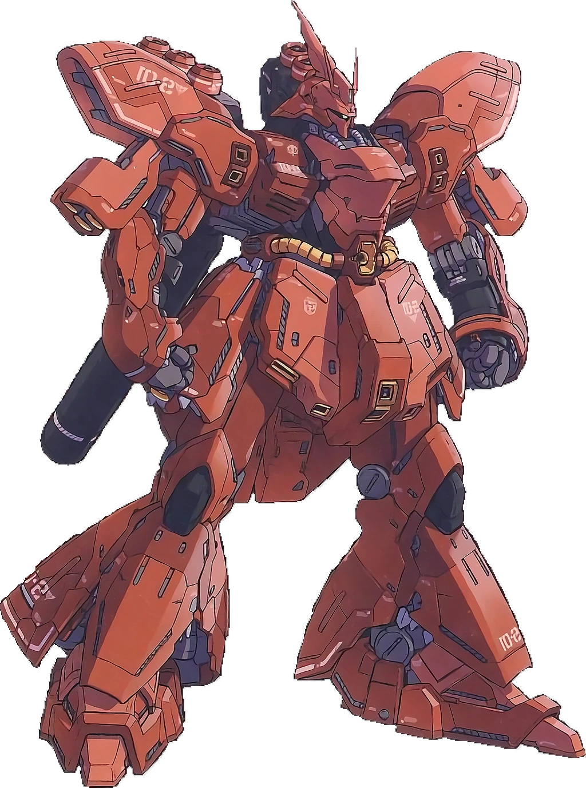

MS-06S Zaku II Commander Type
El MS-06S Zaku II Tipo Comandante fue introducido durante la Guerra de Un Año casi al mismo tiempo que el MS-06F Zaku II como una versión ligeramente mejorada del Zaku II Tipo F. Por la mayoría de la Guerra de Un Año estos Tipo S eran los mobile suits más poderosos y eran piloteados por los mejores. Sin embargo, la superioridad del Zaku II Tipo S pronto terminaría en Julio de 0079 U.C. cuando el mobile suit RX-78-2 Gundam de la Federación sería desplegado. El numero exacto de producción del Zaku II Tipo Comandante es desconocido, con diferentes fuentes dando distintos números. Una de las fuentes más creíbles es que aproximadamente 100 unidades fueron producidas. Char Aznable pudo usar su Zaku II Tipo S arreglado para lanzarse contra el Gundam piloteado por Amuro Ray. A pesar del evidente talento de Amuro, el seguía siendo un novato cuyas habilidades de piloto simplemente no emparejaban con las de Char durante sus primeras batallas. La única razón de que Amuro haya sobrevivido fue porque el Gundam sobrepasaba grandemente al Zaku II en términos de ofensiva y defensiva.
Viendo que la Federación ha logrado crear un mobile suit tan poderoso que puede sobrevivir a enfrentamientos contra Char Aznable en su mayoría, Zeon prontamente se enfocó más en el desarrollo de novedosos mobile suits, mobile suits que pudieran enfrentar incluso contra las nuevas maquinas que la Federación ha desarrollado. Aunque muchos de estos mobile suits tienen especificaciones de rendimiento superiores que cualquier modelo de Zaku, el mobile suit que puede ser el verdadero sucesor al MS-06S Zaku II Commander Type pudo ser el MS-14S Gelgoog Commander Type, el cual también fue construido por la Compañia Zeonic, los mismos fabricantes del Zaku.

| Informacion | |
|---|---|
| Nombre Oficial: Zaku II Commander Type | |
| Número de Modelo: MS-06S | |
| Clasificación: Mobile Suit de Propósito General de Producción Limitada para uso de Comandantes | |
| Manufacturero: Federación Terrestre Proyecto V | |
| Operador: Principado de Zeon Legión Extranjera de Zeon Federación Terrestre | |
| Altura total: 18.0 metros | Rango sensor: 3200 metros |
| Peso estandar: 56.5 t | Armadura: Aleación de Acero Super-duro |
| Peso máximo: 75.2 t | Cabina: Piloto solamente (en cabina estándar en el torso) |
| Velocidad máxima: 165 km/h0.93 G | Fuente de energía : Reactor de Fusión Termonuclear |
| Potencia de salida: 976 kW | Rocket Thrusters: 51600 kg |
MSN-04 Sazabi
A principios de U.C. 0090, Char Aznable reaparece y establece el segundo movimiento Neo Zeon. Luego, Char encargó a Anaheim Electronics que produjera un mobile suit diseñado a medida específicamente para sus capacidades Newtype y sus excelentes habilidades de pilotaje. Pintado en su característico esquema de color rojo e insignia, el Sazabi fue utilizado por Char para liderar personalmente las fuerzas de Neo Zeon en la batalla contra el Londo Bell Task Force de la Federación Terrestre durante el final de la Segunda Guerra de Neo Zeon. En medio de dicho enfrentamiento, luchó contra su antiguo archirrival Amuro Ray que pilotaba su avanzado RX-93 ν Gundam, que también estaba equipado con un sistema de psycoframe. Sin embargo, sería más exacto decir que lideró acciones defensivas contra Londo Bell. Como el Neo Zeon de Char no tenía la mano de obra ni los recursos para librar batallas extensas para reclamar territorio, en su lugar se basó en la estrategia de acelerar los asteroides y dejarlos caer sobre la Tierra para crear un invierno nuclear. Londo Bell lanzaría sus fuerzas e intentaría destruir los asteroides, pero estaban custodiados agresivamente por los mobile suits AMS-119 Geara Doga de Neo Zeon, liderados por el MSN-03 Jagd Doga y el MSN-04 Sazabi de Char. En una de las primeras caídas de asteroides, Char usaría su MSN-04 Sazabi para luchar contra Amuro Ray en su RGZ-91 Re-GZ. Sin embargo, el Re-GZ no pudo seguir el ritmo del Sazabi y casi fue destruido. Posteriormente, Char suministró a Anaheim Electronics el sistema psycoframe, que luego se usó en el RX-93 ν Gundam que estaban construyendo para Amuro. Mientras Neo Zeon intentaba dejar caer el asteroide Axis, los dos volverían a batirse en duelo en máquinas iguales.
La batalla los llevaría al otro lado ya través de Axis en una batalla que recordaría su duelo final en la Guerra de Un Año. Aunque Char era un excelente piloto, finalmente fue derrotado por Amuro, quien dañó gravemente al Sazabi y capturó la cápsula de escape de Char. Los restos del Sazabi permanecerían en la superficie exterior de Axis durante años. Más tarde, Anaheim Electronics usó datos de Sazabi y ν Gundam como base para el MSN-06S Sinanju Stein, que luego dio lugar al MSN-06S Sinanju y al RX-0 Unicorn Gundam.
| Informacion | |
|---|---|
| Nombre Oficial: Sazabi | |
| Número de Modelo: MSN-04 | |
| Clasificación: Mobile Suit Prototipo de Propósito General de uso Newtypeo | |
| Manufacturero:Anaheim Electronics | |
| Operador: Neo Zeon | |
| Altura total: 25,6 metros | |
| Peso estandar: 30,5t | |
| Armadura:Aleación de Gundarium | Peso máximo: 71,2 t |
| Cabina: Un piloto solamente (monitor panorámico / cabina en la cabeza) | Velocidad máxima: 165 km/h1,87 G |
| Fuente de energía: Reactor de Fusión Minovsky Ultracompacto | Potencia de salida: 3960 kW |
| Rocket Thrusters: 133000kg | Rango sensor: 22600 metros |